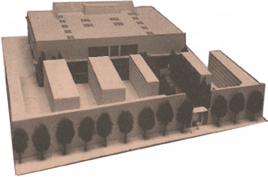

fotografia de la maqueta
del 'maravellós' tanatori,
on queda palesa la destrossa a la Història, la voluntat i la sensibilitat
dels andreuencs,
per tal de que l'Ajuntament de Barcelona i els seus socis nord-americans,
enfotent-se'n de Sant Andreu de Palomar,
puguin fer negoci amb la mort de la gent de Sant Andreu de Palomar.
Ho
podem permetre?

Fòrum
Salvem el Cementiri
Associació
de Veïns de Sant Andreu de Palomar
Comissió
SANT ANDREU DE PALOMAR SALVEM EL CEMENTIRI
Actualitat
Cartes
a l'Alcalde de Barcelona i al Síndic de Greuges de Catalunya
Imatges
Imatges
de la Campanya
Fòrum
Tornar

|
|
|
|
|